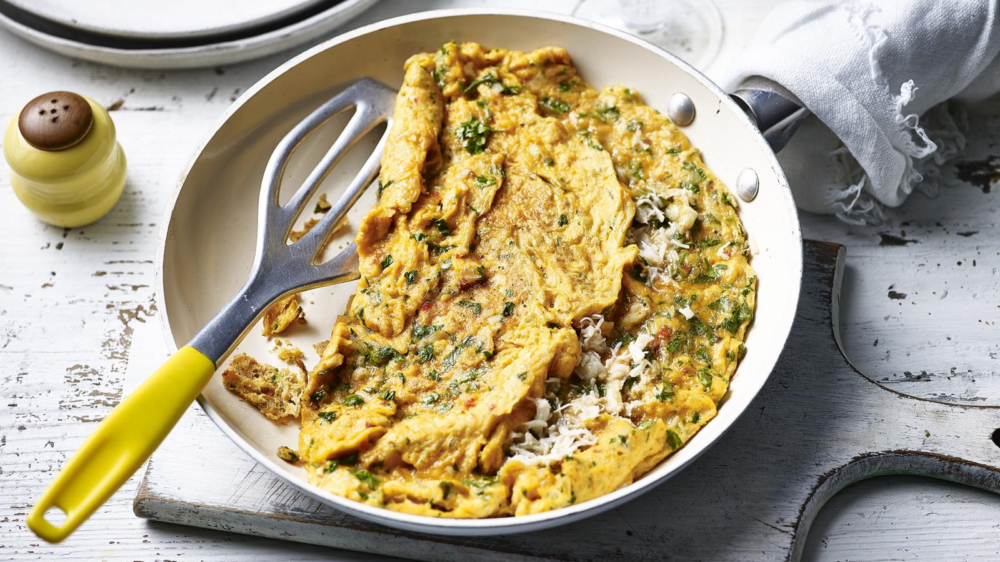

Crab Omelette

Description
A basic omelette is given an indulgent twist with rich clotted cream and sweet crabmeat.
It feels special, but couldn't be simpler to make.
Ingredients
- 15g/½oz unsalted butter
- 1 shallot, finely chopped
- 6 free-range eggs
- 1 tbsp clotted cream
- 50g/1¾ oz Parmesan, finely grated (or vintage Cornish Gouda if you have it)
- 100g/3½oz white crab meat: 100g/3½oz white crab meat
- 50g/1¾oz brown crab meat
- 2 tbsp chopped fresh herbs (mix of parsley, chives, chervil and tarragon)
- salt and freshly ground black pepper
Steps
- Heat the butter in a medium frying pan and add the shallot. Fry for 2 minutes, until softened.
- In a medium bowl, lightly beat the eggs with the clotted cream. Stir in the Parmesan, crab meats, herbs, salt and pepper.
- When the shallots are soft, pour in the egg and crab mixture. Reduce the heat to low and, using a spatula, occasionally draw in the sides as they start to set. While the egg is still wobbly and soft, flip one side of the omelette over the other to form a semi-circle.
- Slide the omelette onto a plate, cut in two and serve each half with a side salad and bread.
Home